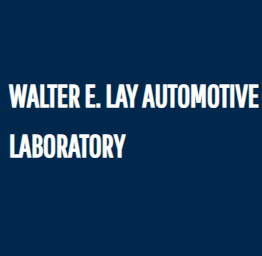

Research Assistant, University of Michigan
September 2026 - Present

Mechanical Engineering Intern, Nanjing, China
June 2026 – August 2026
Research Assistant, Michigan State University
August 2024 – May 2025